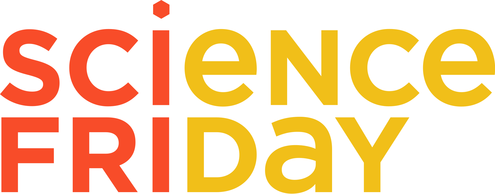

Presentations projets
Tous les vendredi de 11h30 à 12h à l'Innovation Lab

Qui fait quoi?!
L'idée est de créer un moment d'échange autour des différents projets et d'y méler étudiants et enseignants.
Des présentations techniques et informelles qui seront l'occasion pour les presentateurs de partager l'avancement de leur travaux et d'aiguiser leur discours!
/15 minutes de présentation / 15 minutes d'échange.
A midi vous êtes dehors

20/01 - Robminton - projet M2
Robots ramasseur & lanceur de volants de badminton
24/01 - Course de voiture autonome - projet M2
Conception d'une voiture à l'echelle 1/10e en vue de participer à une course de voiture autonome.
03/02 - Localisation Roller - projet M2
Localiser les sportifs lors de compétition de roller
10/02 - Conception et Implémentation d’un décodeur LDPC Non-Binaire - Stage M1
Les codes LDPC ont trouvé leur application dans les communications Satellitaires, Télévision Numérique, et récemment dans le standard de communication 5G. Dans ce projet, nous travaillons sur une famille spécifique de ces codes définie dans un corps de Galois non-binaire, en se focalisant sur l’optimisation de l’architecture du décodeur basée sur l’algorithme T-EMS. Nous présentons l’architecture proposée avec des résultats de simulation et de synthèse sur FPGA.
17/02 - DoRobo - projet M2
"DoRobo" est un robot mobile autonome chargé de réaliser la prise de mesure de qualité de l'air ambiant pour la prévention de risques liés à la fuite de produits toxiques dans les entrepôts de stockages et autres lieux utilisant ou entreposant de nombreux produits nocifs pour l'homme.
24/02 - ?
03/03 - Reconnaissance des émotions - projet M2
Construction d’une base de données labelisée, étude statistique des caractéristiques de la voix et reconnaissance automatique d’émotions